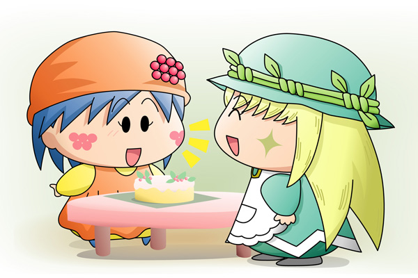

リーネ「ただいま～」
アロマ「おかえりなさい」
リーネ「あら？そのケーキは？
もしかしてアロマちゃんが作ったの？」
アロマ「えぇ、そうよ」
リーネ「わぁ、アロマちゃんケーキ作れるなんてすごいね」
アロマ「そんなことないわ。
このケーキはね、明日のポーロくんのお誕生日にプレゼントするの」
リーネ「……ふ～ん」
アロマ「前にポーロくん、私の誕生日のときにお花をくれたから…。
リーネちゃんはそのお花から生まれたのでしたね」
リーネ「あのときのアロマちゃんの慌て方はすごかったわ」
アロマ「もう！」
リーネ「でもあれからお花にちゃんとお菓子をあげてくれたから、わたしもすっかり
元気になれたわ。
おかげでもうすぐ花を咲かせそうよ」
アロマ「いったいどんなお花を咲かせるのでしょうね」
いろいろお話をしながら、アロマは用意した箱にケーキをしまいました。
アロマ「あら？リボンが無いわ。
前に買っておいたリボンがあるはずよ」
アロマはリボンを探しに隣の部屋へ行きました。
リーネがアロマの家に暮らすようになって１ヶ月が過ぎ、リーネもすっかり家族の一員です。アロマともすっかり打ち解けて、毎日たくさんのお話をして二人で笑っていました。妖精学校のクラスメートのことや、妖精界の出来事や、そしてポーロのことも。
・・・わたしだってポーロくんのことが大好きなんだから！
心の底からこみ上げる思い、そしてリーネの視線の先にはプレゼントのケーキ。ポーロの笑顔を思い浮かべるたびに、リーネの心が少しずつ黒い闇に包まれていきます。そして…。
リーネ「リーネでポン！」
|
前回行ったリーネの今後の行動のアンケート結果は何と「アロマに罠をしかける」でした。たった１回の登場で早くも悪役を演じることになったリーネちゃん(^◇^;)。これからもお嬢様なアロマちゃんに試練を与える重要な役を演じていただきますよ。 |
(2006/7/29)